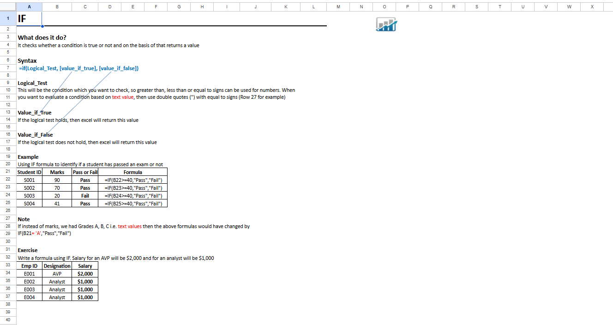
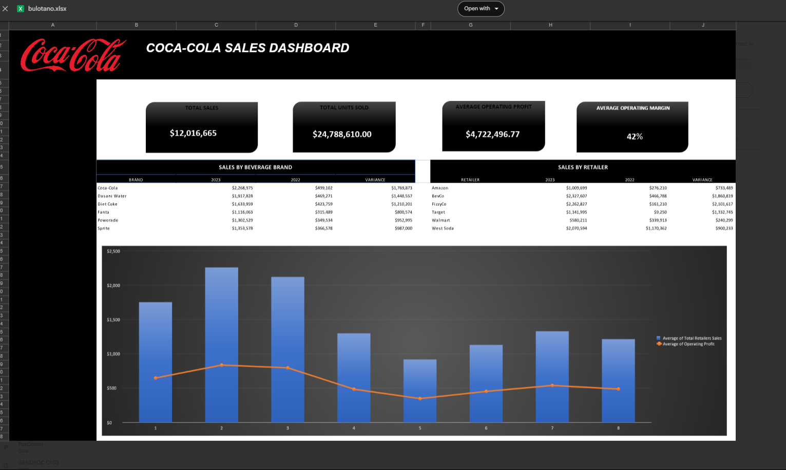
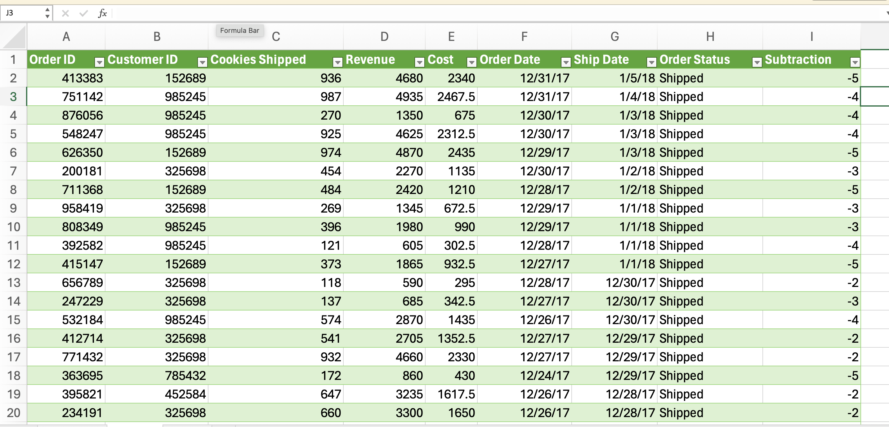

Practice Tasks
Practice Task 1: Data Preparation and Cleaning
This task focuses on cleaning and transforming raw data prior to processing and analysis. It is an important step prior to processing and often involves reformatting data, making corrections to data, and combining datasets to enrich data.

Source Code:
View Raw Files
Practice Task 2: MS Excel Functions
This activity demonstrates how to use the MS Excel Functions. These functions are designed to simplify complex tasks, improve accuracy, and increase productivity compared to writing long, manual formulas.

Source Code:
View Raw Files
Practice Task 3: Demo Creating Dashboards in Excel
This activity includes creating a dashboard that simplifies complex data from spreadsheets by transforming it into visual information that is easier to understand and use.

Source Code:
View Raw Files
Practice Task 4: Power Query Demo
This activity includes creating a dashboard that simplifies complex data from spreadsheets by transforming it into visual information that is easier to understand and use.

Source Code:
View Raw Files